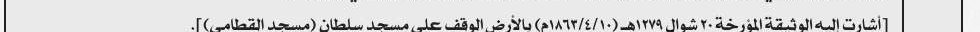

٢٠ شوال ١٢٧٩هـ (١٠ أبريل ١٨٦٣م) · وثيقة بيع بختم القاضي العدساني
وثيقة بيع بيت شما بنت مسعود: بيت عبدالوهاب ابن قطامي من جهة الشمال
ما هي
تبيع شما بنت مسعود بيتها على ناصر ابن راشد، وتذكر الوثيقة حدوده الأربعة: قبلة أرض وقف على مسجد سلطان، وشمالا بيت عبدالوهاب ابن قطامي، وشرقا بيت جاسم ابن حيدر، وجنوبا بيت فاطمة بنت راشد.
أهميتها
هذه أقدم وثيقة وجدناها تذكر العائلة، وتثبت بيت عبدالوهاب ابن قطامي في فريج ابن رومي سنة ١٨٦٣، ملاصقا لأرض مسجد سلطان الذي عُرف بعدها بمسجد القطامي.
من المقصود
تذكر الوثيقة عبدالوهاب ابن قطامي فقط. وكان كبير عائلتنا في فريج ابن رومي سنة ١٨٦٣ عبدالوهاب بن عبدالعزيز المتوفى سنة ١٨٧١، ويضع الجزء السابع من معالم مدينة الكويت القديمة بيوت القطامي على هذه القسائم نفسها بجوار مسجد سلطان. أما عائلة قطامي الأخرى فكانت في القبلة لا هنا.
صور الصفحات


النص الأصلي
ملاحظات
الوثيقة مكتوبة بخط اليد وعليها ختم القاضي. الثمن واسم القاضي الأول غير واضحين في النسخة التي لدينا، فيرجى مطابقتهما مع الأصل. ويذكر الجزء السابع من معالم مدينة الكويت القديمة (ص ٧٩، القسيمة ٤٣) هذه الوثيقة نفسها المؤرخة ٢٠ شوال ١٢٧٩ عن الأرض الموقوفة على مسجد سلطان، الذي يسميه الكتاب أيضا مسجد القطامي.
أسماء أخرى
المصادر
وثيقة عدسانية منشورة على إنستغرام من مجموعة مطبوعة، ويؤكدها الجزء السابع من معالم مدينة الكويت القديمة. ونسخ محفوظة في درايف العائلة.
مرجع الأرشيف
- Ma'alim part 7, p. 79, plot 43 · الوثيقة المؤرخة ٢٠ شوال ١٢٧٩هـ
كيف كُتب هذا النص: نسخه Claude من صورة الوثيقة، ويحتاج الثمن واسم القاضي إلى مراجعة. الترجمة الإنجليزية من Claude، يرجى مراجعتها.
افتح في الموقع التفاعلي